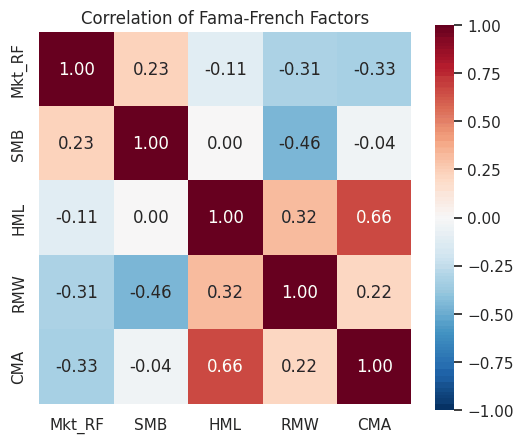
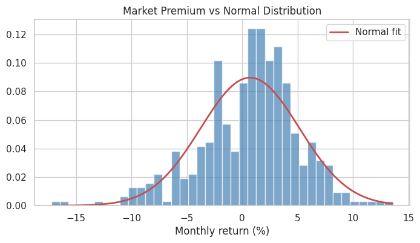
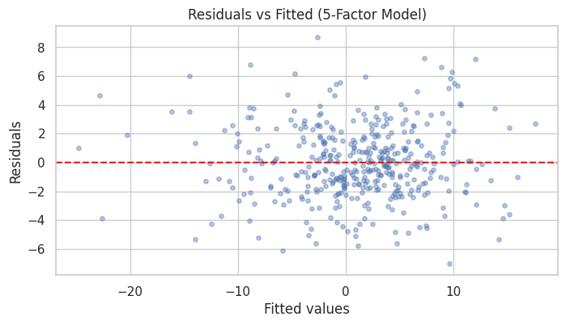
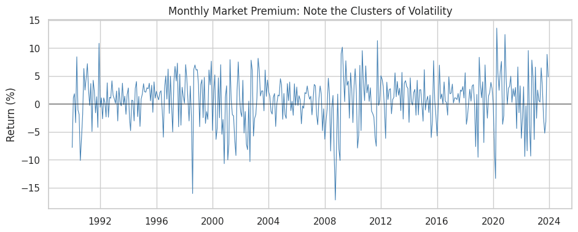
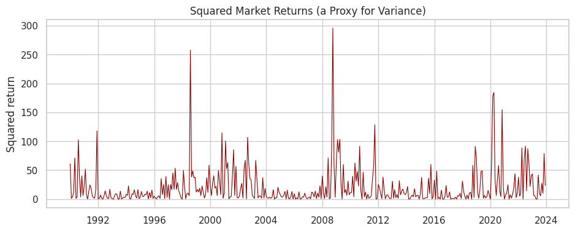
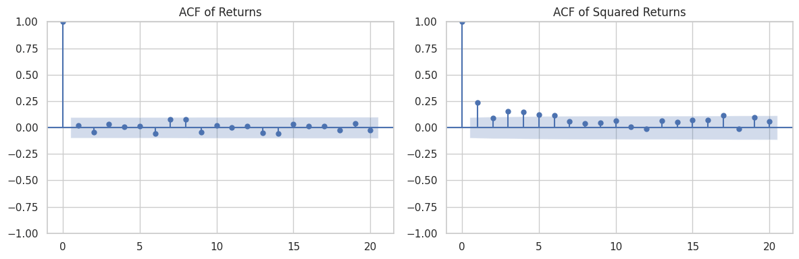
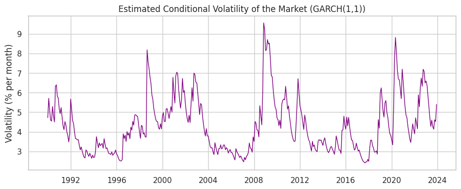

Lectures 1-5 covered the Python language. In Lecture 6 we worked with data in NumPy and pandas, and in Lecture 7 we plotted it.
From here on, the focus is on running standard econometric methods in Python.
This lecture is about inference: estimating relationships and testing whether they are statistically significant (coefficients, standard errors, hypothesis tests).
Lecture 9 is about prediction: building models that forecast well out of sample.
What We'll Cover
Ch 15 (Statistical Foundations): descriptive statistics, correlation, and hypothesis tests with
scipy.stats.Ch 16 (Linear Regression): OLS, robust/clustered/HAC standard errors, and diagnostics with
statsmodels.Ch 17 (Panel Data & IV): fixed effects, instrumental variables, and Fama-MacBeth with
linearmodels.Ch 18 (Volatility Modeling): ARCH/GARCH with
arch.Most examples use the Fama-French 5 factors and the 10 industry portfolios from Ken French's data library, both widely used in empirical asset pricing.
Setup: Installing and Importing Libraries
statsmodels,scipy, andnumpy/pandascome pre-installed in Colab.linearmodels(panel/IV) andarch(GARCH) are not, so we install them.
!pip install -q linearmodels archimport numpy as np
import pandas as pd
import matplotlib.pyplot as plt
import seaborn as sns
from scipy import stats
sns.set_theme(style='whitegrid')Loading Our Data
We need two datasets from Ken French's library: the 5 factors and the 10 industry portfolios.
We write a small helper function,
load_french(), that loads any monthly French dataset (recall functions from Lecture 4). It tries pandas-datareader first and falls back to a direct download.
import io, zipfile, urllib.request
def load_french(dataset, colnames, start='1990-01-01', end='2023-12-31'):
"""Load a monthly dataset from Ken French's data library.
Tries pandas-datareader first, then falls back to a direct download."""
try:
import pandas_datareader.data as web
data = web.DataReader(dataset, 'famafrench', start=start, end=end)[0]
data.index = data.index.to_timestamp()
return data
except Exception as e:
print(f"datareader failed ({type(e).__name__}); using direct download for {dataset}.")
url = (f"https://mba.tuck.dartmouth.edu/pages/faculty/ken.french/"
f"ftp/{dataset}_CSV.zip")
req = urllib.request.Request(url, headers={'User-Agent': 'Mozilla/5.0'})
with urllib.request.urlopen(req) as r:
raw = zipfile.ZipFile(io.BytesIO(r.read()))
text = raw.open(raw.namelist()[0]).read().decode('latin1')
lines = text.splitlines()
s = next(i for i, ln in enumerate(lines)
if len(ln.strip()) >= 6 and ln.strip()[:6].isdigit())
e_ = next((i for i in range(s, len(lines))
if not (len(lines[i].strip()) >= 6 and lines[i].strip()[:6].isdigit())),
len(lines))
block = "\n".join(lines[s:e_])
data = pd.read_csv(io.StringIO(block), header=None,
names=['Date'] + colnames, index_col='Date')
data.index = pd.to_datetime(data.index, format='%Y%m')
return data.replace(-99.99, np.nan)Load the Five Factors
- Columns are
Mkt-RF,SMB,HML,RMW,CMA, and the risk-free rateRF.
factor_cols = ['Mkt-RF', 'SMB', 'HML', 'RMW', 'CMA', 'RF']
factors = load_french('F-F_Research_Data_5_Factors_2x3', factor_cols)
factors.head()| Mkt-RF | SMB | HML | RMW | CMA | RF | |
|---|---|---|---|---|---|---|
| Date | ||||||
| 1990-01-01 | -7.80 | -1.21 | 0.83 | -1.12 | 1.40 | 0.57 |
| 1990-02-01 | 1.11 | 1.15 | 0.65 | -0.04 | -0.61 | 0.57 |
| 1990-03-01 | 1.83 | 1.59 | -2.90 | 1.99 | -0.94 | 0.64 |
| 1990-04-01 | -3.36 | -0.35 | -2.57 | 1.78 | -1.00 | 0.69 |
| 1990-05-01 | 8.44 | -2.41 | -3.89 | 1.68 | -1.63 | 0.68 |
Rename Columns for Formula Compatibility
statsmodelsformulas treat a hyphen as a minus sign, soMkt-RFwould be parsed asMktminusRF.We rename
Mkt-RFtoMkt_RFto avoid this.
factors = factors.rename(columns={'Mkt-RF': 'Mkt_RF'})
factors.columnsIndex(['Mkt_RF', 'SMB', 'HML', 'RMW', 'CMA', 'RF'], dtype='object')
Load the 10 Industry Portfolios
- These are monthly value-weighted returns for 10 broad industries.
industry_cols = ['NoDur', 'Durbl', 'Manuf', 'Enrgy', 'HiTec',
'Telcm', 'Shops', 'Hlth', 'Utils', 'Other']
industries = load_french('10_Industry_Portfolios', industry_cols)
industries.head()| NoDur | Durbl | Manuf | Enrgy | HiTec | Telcm | Shops | Hlth | Utils | Other | |
|---|---|---|---|---|---|---|---|---|---|---|
| Date | ||||||||||
| 1990-01-01 | -9.47 | -3.52 | -6.31 | -4.28 | -1.47 | -13.04 | -6.41 | -7.30 | -5.35 | -8.92 |
| 1990-02-01 | -0.55 | 5.05 | 2.56 | 3.11 | 4.04 | -0.26 | 1.93 | -2.08 | 0.21 | 2.52 |
| 1990-03-01 | 4.63 | 2.88 | 3.88 | -0.59 | 4.63 | 4.22 | 5.16 | 3.80 | -0.75 | -0.38 |
| 1990-04-01 | -0.17 | -4.08 | -2.77 | -3.58 | -1.94 | -3.29 | -2.08 | 0.34 | -5.52 | -3.42 |
| 1990-05-01 | 9.09 | 7.75 | 8.11 | 6.05 | 12.41 | 9.20 | 11.53 | 12.81 | 5.43 | 9.18 |
A Note on Units
All values are in percent (
1.5means a 1.5% monthly return).For asset-pricing regressions we work with excess returns (return minus the risk-free rate).
# Align the two datasets on common dates, then build excess returns
common = factors.index.intersection(industries.index)
factors = factors.loc[common]
industries = industries.loc[common]
# Name the index 'Date' so later reshaping (melt/reset_index) is predictable
factors.index.name = 'Date'
industries.index.name = 'Date'
# Excess return = industry return - risk-free rate
ind_excess = industries.subtract(factors['RF'], axis=0)
ind_excess.index.name = 'Date'
ind_excess.head()| NoDur | Durbl | Manuf | Enrgy | HiTec | Telcm | Shops | Hlth | Utils | Other | |
|---|---|---|---|---|---|---|---|---|---|---|
| Date | ||||||||||
| 1990-01-01 | -10.04 | -4.09 | -6.88 | -4.85 | -2.04 | -13.61 | -6.98 | -7.87 | -5.92 | -9.49 |
| 1990-02-01 | -1.12 | 4.48 | 1.99 | 2.54 | 3.47 | -0.83 | 1.36 | -2.65 | -0.36 | 1.95 |
| 1990-03-01 | 3.99 | 2.24 | 3.24 | -1.23 | 3.99 | 3.58 | 4.52 | 3.16 | -1.39 | -1.02 |
| 1990-04-01 | -0.86 | -4.77 | -3.46 | -4.27 | -2.63 | -3.98 | -2.77 | -0.35 | -6.21 | -4.11 |
| 1990-05-01 | 8.41 | 7.07 | 7.43 | 5.37 | 11.73 | 8.52 | 10.85 | 12.13 | 4.75 | 8.50 |
print(f"Sample period: {common.min():%Y-%m} to {common.max():%Y-%m}")
print(f"Number of months: {len(common)}")Sample period: 1990-01 to 2023-12 Number of months: 408
Ch 15: Statistical Foundations
Before regression, we need a few statistical tools: descriptive statistics, correlation, and hypothesis tests.
In Lecture 7 we plotted distributions; here we summarize them with statistics and tests.
scipy.statsis the standard library for these tasks. The conventional import isfrom scipy import stats.
Descriptive Statistics
- pandas gives quick summaries;
scipy.statsadds higher moments like skewness and kurtosis.
# pandas summary of the five factors
factors[['Mkt_RF', 'SMB', 'HML', 'RMW', 'CMA']].describe()| Mkt_RF | SMB | HML | RMW | CMA | |
|---|---|---|---|---|---|
| count | 408.000000 | 408.000000 | 408.000000 | 408.000000 | 408.000000 |
| mean | 0.707279 | 0.117034 | 0.151569 | 0.375270 | 0.197917 |
| std | 4.448067 | 3.046912 | 3.248474 | 2.626859 | 2.176679 |
| min | -17.200000 | -15.530000 | -13.830000 | -18.930000 | -7.060000 |
| 25% | -1.960000 | -1.820000 | -1.670000 | -0.915000 | -1.070000 |
| 50% | 1.185000 | 0.045000 | -0.070000 | 0.345000 | -0.020000 |
| 75% | 3.430000 | 1.912500 | 1.670000 | 1.487500 | 1.410000 |
| max | 13.580000 | 18.540000 | 12.860000 | 13.040000 | 9.000000 |
Higher Moments: Skewness and Kurtosis
- Skewness measures asymmetry (negative = long left tail).
- Kurtosis measures tail heaviness (positive excess = fatter tails than normal).
- Stock market returns typically have negative skewness and fat tails.
print(f"Market premium skewness: {stats.skew(factors['Mkt_RF']):.3f}")
print(f"Market premium excess kurtosis: {stats.kurtosis(factors['Mkt_RF']):.3f}")Market premium skewness: -0.556 Market premium excess kurtosis: 1.001
stats.describe()returns several summaries at once.
desc = stats.describe(factors['Mkt_RF'])
print(f"n = {desc.nobs}")
print(f"mean = {desc.mean:.3f}")
print(f"variance = {desc.variance:.3f}")
print(f"skewness = {desc.skewness:.3f}")
print(f"kurtosis = {desc.kurtosis:.3f}")n = 408 mean = 0.707 variance = 19.785 skewness = -0.556 kurtosis = 1.001
Correlation
Pearson Correlation
stats.pearsonr(x, y)returns the linear correlation coefficient and a p-value for the null hypothesis of zero correlation.
r, pval = stats.pearsonr(factors['SMB'], factors['HML'])
print(f"Pearson r = {r:.3f}, p-value = {pval:.4f}")Pearson r = 0.000, p-value = 0.9974
Spearman (Rank) Correlation
stats.spearmanrmeasures monotonic association using ranks. It is robust to outliers and does not require a linear relationship.
rho, pval = stats.spearmanr(factors['SMB'], factors['HML'])
print(f"Spearman rho = {rho:.3f}, p-value = {pval:.4f}")Spearman rho = 0.036, p-value = 0.4637
Correlation Matrix
- For many variables at once, use pandas
.corr()(recall the heatmap from Lecture 7).
factor_corr = factors[['Mkt_RF', 'SMB', 'HML', 'RMW', 'CMA']].corr()
factor_corr.round(2)| Mkt_RF | SMB | HML | RMW | CMA | |
|---|---|---|---|---|---|
| Mkt_RF | 1.00 | 0.23 | -0.11 | -0.31 | -0.33 |
| SMB | 0.23 | 1.00 | 0.00 | -0.46 | -0.04 |
| HML | -0.11 | 0.00 | 1.00 | 0.32 | 0.66 |
| RMW | -0.31 | -0.46 | 0.32 | 1.00 | 0.22 |
| CMA | -0.33 | -0.04 | 0.66 | 0.22 | 1.00 |
fig, ax = plt.subplots(figsize=(6, 5))
sns.heatmap(factor_corr, annot=True, fmt='.2f', cmap='RdBu_r',
center=0, vmin=-1, vmax=1, square=True, ax=ax)
ax.set_title('Correlation of Fama-French Factors')
plt.show()
Distributions and Normality
- Many statistical tests assume normality. Here we check whether the market premium is normally distributed.
Overlaying a Normal Curve
stats.norm.pdfgives the normal density. We fit it using the sample mean and standard deviation.
mu, sigma = factors['Mkt_RF'].mean(), factors['Mkt_RF'].std()
fig, ax = plt.subplots(figsize=(8, 4))
ax.hist(factors['Mkt_RF'], bins=40, density=True,
color='steelblue', edgecolor='white', alpha=0.7)
x = np.linspace(factors['Mkt_RF'].min(), factors['Mkt_RF'].max(), 200)
ax.plot(x, stats.norm.pdf(x, mu, sigma), 'r-', linewidth=2, label='Normal fit')
ax.set_title('Market Premium vs Normal Distribution')
ax.set_xlabel('Monthly return (%)')
ax.legend()
plt.show()
Testing for Normality
- The Jarque-Bera test uses skewness and kurtosis. A small p-value rejects normality.
jb_stat, jb_pval = stats.jarque_bera(factors['Mkt_RF'])
print(f"Jarque-Bera statistic = {jb_stat:.2f}")
print(f"p-value = {jb_pval:.4f}")
if jb_pval < 0.05:
print("=> Reject normality at the 5% level.")
else:
print("=> Cannot reject normality at the 5% level.")Jarque-Bera statistic = 38.05 p-value = 0.0000 => Reject normality at the 5% level.
Hypothesis Testing
One-Sample t-test
We test whether the average market premium is different from zero, that is, whether there is an equity premium.
stats.ttest_1samp(data, popmean)tests whether the mean equals a hypothesized value.
t_stat, p_val = stats.ttest_1samp(factors['Mkt_RF'], 0)
print(f"Mean market premium = {factors['Mkt_RF'].mean():.3f}% per month")
print(f"t-statistic = {t_stat:.3f}, p-value = {p_val:.4f}")Mean market premium = 0.707% per month t-statistic = 3.212, p-value = 0.0014
Two-Sample t-test
The two-sample test compares the average market premium in the first and second halves of the sample.
stats.ttest_ind(a, b)tests whether two groups have equal means.
mid = len(factors) // 2
first_half = factors['Mkt_RF'].iloc[:mid]
second_half = factors['Mkt_RF'].iloc[mid:]
t_stat, p_val = stats.ttest_ind(first_half, second_half)
print(f"First half mean: {first_half.mean():.3f}%")
print(f"Second half mean: {second_half.mean():.3f}%")
print(f"t-statistic = {t_stat:.3f}, p-value = {p_val:.4f}")First half mean: 0.618% Second half mean: 0.797% t-statistic = -0.405, p-value = 0.6857
In-Class Exercise
15-1. Descriptive Statistics:
- Compute the mean, standard deviation, skewness, and excess kurtosis of the
HMLfactor. - Is
HMLpositively or negatively skewed over this sample?
15-2. Correlation:
- Compute the Pearson correlation between
SMBandRMW, along with its p-value. - Is the correlation statistically significant at the 5% level?
15-3. Equity Premium Test:
- Run a one-sample t-test on the
RMW(profitability) factor against a mean of zero. - Is the average profitability premium statistically different from zero?
Ch 16: Linear Regression with statsmodels
statsmodelsis the main Python library for econometric regression. It provides detailed summary tables, robust standard errors, diagnostics, and hypothesis tests.It has two interfaces:
- The formula API (
statsmodels.formula.api, aliasedsmf) uses R-style strings likey ~ x1 + x2. - The arrays API (
statsmodels.api, aliasedsm) takes explicitXandyarrays.
- The formula API (
We use the formula API for most models because it is concise and handles categorical variables automatically.
import statsmodels.api as sm
import statsmodels.formula.api as smfSimple Regression: the CAPM
The Capital Asset Pricing Model (CAPM) says a portfolio's excess return is explained by its sensitivity to the market:
R_excess = alpha + beta * Mkt_RF + errorA significant alpha means the portfolio earns returns that the market factor does not explain.
We estimate the CAPM for the
HiTec(technology) industry.
# Build a regression DataFrame: one portfolio's excess return + the factors
reg_df = factors.copy()
reg_df['HiTec'] = ind_excess['HiTec']
reg_df[['HiTec', 'Mkt_RF']].head()| HiTec | Mkt_RF | |
|---|---|---|
| Date | ||
| 1990-01-01 | -2.04 | -7.80 |
| 1990-02-01 | 3.47 | 1.11 |
| 1990-03-01 | 3.99 | 1.83 |
| 1990-04-01 | -2.63 | -3.36 |
| 1990-05-01 | 11.73 | 8.44 |
capm = smf.ols('HiTec ~ Mkt_RF', data=reg_df).fit()
print(capm.summary()) OLS Regression Results
==============================================================================
Dep. Variable: HiTec R-squared: 0.748
Model: OLS Adj. R-squared: 0.748
Method: Least Squares F-statistic: 1208.
Date: Fri, 18 Sep 2026 Prob (F-statistic): 9.67e-124
Time: 05:29:07 Log-Likelihood: -1077.7
No. Observations: 408 AIC: 2159.
Df Residuals: 406 BIC: 2167.
Df Model: 1
Covariance Type: nonrobust
==============================================================================
coef std err t P>|t| [0.025 0.975]
------------------------------------------------------------------------------
Intercept 0.1116 0.171 0.654 0.513 -0.224 0.447
Mkt_RF 1.3184 0.038 34.757 0.000 1.244 1.393
==============================================================================
Omnibus: 29.157 Durbin-Watson: 2.123
Prob(Omnibus): 0.000 Jarque-Bera (JB): 71.966
Skew: 0.334 Prob(JB): 2.36e-16
Kurtosis: 4.946 Cond. No. 4.56
==============================================================================
Notes:
[1] Standard Errors assume that the covariance matrix of the errors is correctly specified.
Reading the Summary Table
coef: the estimated coefficients (Intercept= alpha,Mkt_RF= beta).std err: the standard error of each estimate.tandP>|t|: the t-statistic and p-value for the null hypothesis that the coefficient is zero.R-squared: the fraction of variance explained.[0.025 0.975]: the 95% confidence interval.
Pulling Out Specific Numbers
- The fitted result stores the estimates and statistics as attributes, such as
.params,.rsquared,.tvalues, and.pvalues.
print(f"Alpha (monthly): {capm.params['Intercept']:.4f}")
print(f"Beta: {capm.params['Mkt_RF']:.4f}")
print(f"R-squared: {capm.rsquared:.4f}")
print(f"Alpha t-stat: {capm.tvalues['Intercept']:.3f}")
print(f"Alpha p-value: {capm.pvalues['Intercept']:.4f}")Alpha (monthly): 0.1116 Beta: 1.3184 R-squared: 0.7485 Alpha t-stat: 0.654 Alpha p-value: 0.5134
Multiple Regression: the 5-Factor Model
The Fama-French 5-factor model adds size, value, profitability, and investment factors:
R_excess = alpha + b1*Mkt_RF + b2*SMB + b3*HML + b4*RMW + b5*CMA + errorAdd terms to the formula with
+.
ff5 = smf.ols('HiTec ~ Mkt_RF + SMB + HML + RMW + CMA', data=reg_df).fit()
print(ff5.summary()) OLS Regression Results
==============================================================================
Dep. Variable: HiTec R-squared: 0.860
Model: OLS Adj. R-squared: 0.859
Method: Least Squares F-statistic: 495.8
Date: Fri, 18 Sep 2026 Prob (F-statistic): 2.07e-169
Time: 05:29:07 Log-Likelihood: -957.45
No. Observations: 408 AIC: 1927.
Df Residuals: 402 BIC: 1951.
Df Model: 5
Covariance Type: nonrobust
==============================================================================
coef std err t P>|t| [0.025 0.975]
------------------------------------------------------------------------------
Intercept 0.5070 0.133 3.825 0.000 0.246 0.768
Mkt_RF 1.1555 0.032 35.961 0.000 1.092 1.219
SMB -0.0009 0.048 -0.018 0.986 -0.095 0.093
HML -0.3797 0.055 -6.869 0.000 -0.488 -0.271
RMW -0.4114 0.060 -6.902 0.000 -0.529 -0.294
CMA -0.3443 0.083 -4.166 0.000 -0.507 -0.182
==============================================================================
Omnibus: 7.072 Durbin-Watson: 2.140
Prob(Omnibus): 0.029 Jarque-Bera (JB): 7.016
Skew: 0.275 Prob(JB): 0.0300
Kurtosis: 3.333 Cond. No. 5.22
==============================================================================
Notes:
[1] Standard Errors assume that the covariance matrix of the errors is correctly specified.
- Compare the two alphas. Adding factors usually shrinks alpha, but for
HiTecit rises, mainly because the industry loads negatively onHML,RMW, andCMA, which had positive average returns over this sample.
print(f"CAPM alpha: {capm.params['Intercept']:.4f} (R2={capm.rsquared:.3f})")
print(f"5-factor alpha: {ff5.params['Intercept']:.4f} (R2={ff5.rsquared:.3f})")CAPM alpha: 0.1116 (R2=0.748) 5-factor alpha: 0.5070 (R2=0.860)
Categorical Variables and Interactions
Use
C(variable)to treat a column as categorical (statsmodels creates dummy variables automatically).Use
:for an interaction term and*for "both main effects and their interaction."As an example, we test whether the market beta of
HiTecwas different in crisis months (2008-2009 and 2020).
# Create a crisis indicator
reg_df['crisis'] = reg_df.index.year.isin([2008, 2009, 2020]).astype(int)
reg_df['crisis'].value_counts()| count | |
|---|---|
| crisis | |
| 0 | 372 |
| 1 | 36 |
# Mkt_RF * C(crisis) gives: Mkt_RF, the crisis dummy, and their interaction
beta_shift = smf.ols('HiTec ~ Mkt_RF * C(crisis)', data=reg_df).fit()
print(beta_shift.summary()) OLS Regression Results
==============================================================================
Dep. Variable: HiTec R-squared: 0.759
Model: OLS Adj. R-squared: 0.758
Method: Least Squares F-statistic: 425.0
Date: Fri, 18 Sep 2026 Prob (F-statistic): 1.50e-124
Time: 05:29:07 Log-Likelihood: -1068.6
No. Observations: 408 AIC: 2145.
Df Residuals: 404 BIC: 2161.
Df Model: 3
Covariance Type: nonrobust
=========================================================================================
coef std err t P>|t| [0.025 0.975]
-----------------------------------------------------------------------------------------
Intercept -0.0132 0.176 -0.075 0.940 -0.359 0.333
C(crisis)[T.1] 0.8134 0.584 1.394 0.164 -0.334 1.961
Mkt_RF 1.4038 0.042 33.081 0.000 1.320 1.487
Mkt_RF:C(crisis)[T.1] -0.3635 0.088 -4.117 0.000 -0.537 -0.190
==============================================================================
Omnibus: 26.559 Durbin-Watson: 2.148
Prob(Omnibus): 0.000 Jarque-Bera (JB): 60.994
Skew: 0.321 Prob(JB): 5.69e-14
Kurtosis: 4.782 Cond. No. 16.5
==============================================================================
Notes:
[1] Standard Errors assume that the covariance matrix of the errors is correctly specified.
- The
Mkt_RF:C(crisis)[T.1]coefficient is the change in beta during crisis months. - A positive value means tech was more sensitive to the market during crises; a negative value means it was less sensitive.
Robust Standard Errors
OLS standard errors assume homoskedasticity (constant error variance). Financial data usually violates this.
Heteroskedasticity-robust (White) standard errors remain valid when the error variance is not constant. Pass
cov_type='HC3'to.fit().The coefficients stay the same; only the standard errors (and so the t-statistics and p-values) change.
ols_se = smf.ols('HiTec ~ Mkt_RF + SMB + HML', data=reg_df).fit()
rob_se = smf.ols('HiTec ~ Mkt_RF + SMB + HML', data=reg_df).fit(cov_type='HC3')
compare = pd.DataFrame({
'coef': ols_se.params,
'OLS_se': ols_se.bse,
'Robust_se(HC3)': rob_se.bse,
})
compare.round(4)| coef | OLS_se | Robust_se(HC3) | |
|---|---|---|---|
| Intercept | 0.2417 | 0.1368 | 0.1371 |
| Mkt_RF | 1.2447 | 0.0314 | 0.0382 |
| SMB | 0.1423 | 0.0456 | 0.0646 |
| HML | -0.6242 | 0.0418 | 0.0557 |
HAC / Newey-West Standard Errors
Time-series regressions often have autocorrelated errors as well as heteroskedasticity.
HAC (heteroskedasticity- and autocorrelation-consistent) standard errors, also called Newey-West standard errors, allow for both.
Pass
cov_type='HAC'and amaxlagsvalue (a common rule of thumb is a few lags).
hac = smf.ols('HiTec ~ Mkt_RF + SMB + HML', data=reg_df).fit(
cov_type='HAC', cov_kwds={'maxlags': 6})
pd.DataFrame({
'coef': hac.params,
'OLS_se': ols_se.bse,
'HAC_se': hac.bse,
}).round(4)| coef | OLS_se | HAC_se | |
|---|---|---|---|
| Intercept | 0.2417 | 0.1368 | 0.1312 |
| Mkt_RF | 1.2447 | 0.0314 | 0.0456 |
| SMB | 0.1423 | 0.0456 | 0.0579 |
| HML | -0.6242 | 0.0418 | 0.0770 |
Clustered Standard Errors
When observations cluster into groups (e.g., by year), errors may be correlated within clusters.
Clustered standard errors account for this. Pass
cov_type='cluster'and the grouping variable.
clustered = smf.ols('HiTec ~ Mkt_RF + SMB + HML', data=reg_df).fit(
cov_type='cluster', cov_kwds={'groups': reg_df.index.year})
pd.DataFrame({
'coef': clustered.params,
'OLS_se': ols_se.bse,
'Clustered_se': clustered.bse,
}).round(4)| coef | OLS_se | Clustered_se | |
|---|---|---|---|
| Intercept | 0.2417 | 0.1368 | 0.1388 |
| Mkt_RF | 1.2447 | 0.0314 | 0.0561 |
| SMB | 0.1423 | 0.0456 | 0.0518 |
| HML | -0.6242 | 0.0418 | 0.0853 |
Regression Diagnostics
Residual Plot
- A plot of residuals against fitted values can show heteroskedasticity or nonlinearity (recall plotting from Lecture 7).
fig, ax = plt.subplots(figsize=(8, 4))
ax.scatter(ff5.fittedvalues, ff5.resid, alpha=0.4, s=15)
ax.axhline(0, color='red', linestyle='--')
ax.set_xlabel('Fitted values')
ax.set_ylabel('Residuals')
ax.set_title('Residuals vs Fitted (5-Factor Model)')
plt.show()
Heteroskedasticity Test: Breusch-Pagan
- Formally test for heteroskedasticity. A small p-value indicates non-constant variance.
from statsmodels.stats.diagnostic import het_breuschpagan
bp_stat, bp_pval, _, _ = het_breuschpagan(ff5.resid, ff5.model.exog)
print(f"Breusch-Pagan statistic = {bp_stat:.3f}")
print(f"p-value = {bp_pval:.4f}")
if bp_pval < 0.05:
print("=> Heteroskedasticity detected; use robust standard errors.")Breusch-Pagan statistic = 4.855 p-value = 0.4339
Multicollinearity: Variance Inflation Factors
- VIF measures how much a regressor is explained by the others. VIF > 10 signals serious multicollinearity.
from statsmodels.stats.outliers_influence import variance_inflation_factor
X = sm.add_constant(reg_df[['Mkt_RF', 'SMB', 'HML', 'RMW', 'CMA']])
vif = pd.DataFrame({
'variable': X.columns,
'VIF': [variance_inflation_factor(X.values, i) for i in range(X.shape[1])]
})
vif.round(2)| variable | VIF | |
|---|---|---|
| 0 | const | 1.00 |
| 1 | Mkt_RF | 1.28 |
| 2 | SMB | 1.32 |
| 3 | HML | 2.02 |
| 4 | RMW | 1.54 |
| 5 | CMA | 2.03 |
Hypothesis Testing
Testing a Single Restriction
The summary table tests each coefficient against 0. Here we test whether the market beta equals 1.
.t_test()takes a restriction string, such as'Mkt_RF = 1'.
print(ff5.t_test('Mkt_RF = 1')) Test for Constraints
==============================================================================
coef std err t P>|t| [0.025 0.975]
------------------------------------------------------------------------------
c0 1.1555 0.032 4.840 0.000 1.092 1.219
==============================================================================
Testing Joint Restrictions (F-test)
An F-test checks whether the four non-market factors are jointly significant. The null hypothesis is that all four coefficients are zero.
.f_test()takes the restrictions as one string, separated by commas.
f_result = ff5.f_test('SMB = 0, HML = 0, RMW = 0, CMA = 0')
print(f"F-statistic = {float(f_result.fvalue):.3f}")
print(f"p-value = {float(f_result.pvalue):.4g}")F-statistic = 80.685 p-value = 3.233e-50
The Dummy Variable Trap
Including a dummy for every category together with an intercept makes the regressors perfectly collinear.
C()in statsmodels drops one category automatically, but dummies built by hand can cause this problem.The next cell creates the trap on purpose.
# Manually create BOTH crisis and non-crisis dummies, then include both + intercept
reg_df['non_crisis'] = 1 - reg_df['crisis']
# crisis + non_crisis + intercept are perfectly collinear
trap = smf.ols('HiTec ~ Mkt_RF + crisis + non_crisis', data=reg_df).fit()
print(trap.summary()) OLS Regression Results
==============================================================================
Dep. Variable: HiTec R-squared: 0.749
Model: OLS Adj. R-squared: 0.748
Method: Least Squares F-statistic: 605.2
Date: Fri, 18 Sep 2026 Prob (F-statistic): 2.17e-122
Time: 05:29:08 Log-Likelihood: -1077.0
No. Observations: 408 AIC: 2160.
Df Residuals: 405 BIC: 2172.
Df Model: 2
Covariance Type: nonrobust
==============================================================================
coef std err t P>|t| [0.025 0.975]
------------------------------------------------------------------------------
Intercept 0.2620 0.198 1.321 0.187 -0.128 0.652
Mkt_RF 1.3198 0.038 34.790 0.000 1.245 1.394
crisis 0.4740 0.383 1.239 0.216 -0.278 1.226
non_crisis -0.2119 0.223 -0.950 0.343 -0.651 0.227
==============================================================================
Omnibus: 29.624 Durbin-Watson: 2.130
Prob(Omnibus): 0.000 Jarque-Bera (JB): 72.656
Skew: 0.343 Prob(JB): 1.67e-16
Kurtosis: 4.950 Cond. No. 1.27e+16
==============================================================================
Notes:
[1] Standard Errors assume that the covariance matrix of the errors is correctly specified.
[2] The smallest eigenvalue is 5.11e-29. This might indicate that there are
strong multicollinearity problems or that the design matrix is singular.
/tmp/ipykernel_1690/138966126.py:5: SingularMatrixWarning: The design matrix is rank-deficient. The model parameters are not uniquely determined.
trap = smf.ols('HiTec ~ Mkt_RF + crisis + non_crisis', data=reg_df).fit()
statsmodels still reports estimates for all three terms, but it warns that the design matrix is rank-deficient (singular). The coefficients on
Intercept,crisis, andnon_crisisare not separately identified, so their individual values should not be interpreted.Never include a full set of dummies together with an intercept. Use
C()and let statsmodels handle the categories.
In-Class Exercise
16-1. CAPM for Another Industry:
- Estimate the CAPM (
Mkt_RFonly) for theUtils(utilities) industry's excess return. - Report its beta and R-squared. Is the beta above or below 1? What does that say about utilities' market risk?
16-2. Full 5-Factor Model:
- Estimate the 5-factor model for the
Enrgy(energy) industry. - Which factors are statistically significant at the 5% level?
16-3. Robust Standard Errors:
- Re-estimate the 5-factor model for
Enrgyusing HAC (Newey-West) standard errors withmaxlags=6. - Compare the t-statistic on
Mkt_RFto the plain-OLS version. Does the conclusion change?
16-4. Alpha Test:
- For the
Hlth(healthcare) industry's 5-factor model, test whether the alpha (intercept) is statistically different from zero. - Did healthcare deliver a significant abnormal return over this sample?
16-5. Joint Significance:
- For the
Shops(retail) industry's 5-factor model, run an F-test of the joint hypothesis thatSMB,HML,RMW, andCMAare all zero. - Are the non-market factors jointly significant?
Ch 17: Panel Data & IV with linearmodels
Much of econometrics uses panel data: many entities (firms, countries, portfolios) observed over many periods.
statsmodelshas limited support for panel models.linearmodelsprovides fixed effects, random effects, IV/2SLS, and Fama-MacBeth estimators.We treat the 10 industry portfolios as a panel, with industry as the entity and month as the time period.
from linearmodels import PooledOLS, PanelOLS, RandomEffects, IV2SLS, FamaMacBethBuilding a Panel DataFrame
linearmodelsexpects a MultiIndex with (entity, time).Our
ind_excessis wide (one column per industry). Wemeltit to long format, then add the factors (recall reshaping and merging from Lecture 6).
# Wide -> long: one row per (industry, month)
panel = ind_excess.reset_index().melt(
id_vars='Date', var_name='industry', value_name='excess')
panel.head()| Date | industry | excess | |
|---|---|---|---|
| 0 | 1990-01-01 | NoDur | -10.04 |
| 1 | 1990-02-01 | NoDur | -1.12 |
| 2 | 1990-03-01 | NoDur | 3.99 |
| 3 | 1990-04-01 | NoDur | -0.86 |
| 4 | 1990-05-01 | NoDur | 8.41 |
# Attach the factors to every row by merging on Date
factor_data = factors[['Mkt_RF', 'SMB', 'HML', 'RMW', 'CMA']].reset_index()
panel = panel.merge(factor_data, on='Date', how='left')
panel.head()| Date | industry | excess | Mkt_RF | SMB | HML | RMW | CMA | |
|---|---|---|---|---|---|---|---|---|
| 0 | 1990-01-01 | NoDur | -10.04 | -7.80 | -1.21 | 0.83 | -1.12 | 1.40 |
| 1 | 1990-02-01 | NoDur | -1.12 | 1.11 | 1.15 | 0.65 | -0.04 | -0.61 |
| 2 | 1990-03-01 | NoDur | 3.99 | 1.83 | 1.59 | -2.90 | 1.99 | -0.94 |
| 3 | 1990-04-01 | NoDur | -0.86 | -3.36 | -0.35 | -2.57 | 1.78 | -1.00 |
| 4 | 1990-05-01 | NoDur | 8.41 | 8.44 | -2.41 | -3.89 | 1.68 | -1.63 |
# Set the (entity, time) MultiIndex that linearmodels expects
panel = panel.set_index(['industry', 'Date'])
panel.head()| excess | Mkt_RF | SMB | HML | RMW | CMA | ||
|---|---|---|---|---|---|---|---|
| industry | Date | ||||||
| NoDur | 1990-01-01 | -10.04 | -7.80 | -1.21 | 0.83 | -1.12 | 1.40 |
| 1990-02-01 | -1.12 | 1.11 | 1.15 | 0.65 | -0.04 | -0.61 | |
| 1990-03-01 | 3.99 | 1.83 | 1.59 | -2.90 | 1.99 | -0.94 | |
| 1990-04-01 | -0.86 | -3.36 | -0.35 | -2.57 | 1.78 | -1.00 | |
| 1990-05-01 | 8.41 | 8.44 | -2.41 | -3.89 | 1.68 | -1.63 |
Add an Entity-and-Time-Varying Regressor
The factors are common to all industries in a given month. They vary over time but not across industries.
To illustrate fixed effects fully, we add each industry's own lagged excess return,
lag_excess(a momentum-style variable that varies across both dimensions).
# Lag within each industry (group by the entity level of the index)
panel['lag_excess'] = panel.groupby(level='industry')['excess'].shift(1)
panel = panel.dropna()
panel.head()| excess | Mkt_RF | SMB | HML | RMW | CMA | lag_excess | ||
|---|---|---|---|---|---|---|---|---|
| industry | Date | |||||||
| NoDur | 1990-02-01 | -1.12 | 1.11 | 1.15 | 0.65 | -0.04 | -0.61 | -10.04 |
| 1990-03-01 | 3.99 | 1.83 | 1.59 | -2.90 | 1.99 | -0.94 | -1.12 | |
| 1990-04-01 | -0.86 | -3.36 | -0.35 | -2.57 | 1.78 | -1.00 | 3.99 | |
| 1990-05-01 | 8.41 | 8.44 | -2.41 | -3.89 | 1.68 | -1.63 | -0.86 | |
| 1990-06-01 | 1.45 | -1.09 | 1.31 | -2.00 | -0.99 | -0.39 | 8.41 |
Pooled OLS
Pooled OLS ignores the panel structure. It is OLS on all rows stacked together.
It is the baseline for the panel models below. In a
PanelOLSformula, fixed effects are added with theEntityEffectsandTimeEffectsterms;PooledOLSincludes neither.
pooled = PooledOLS.from_formula(
'excess ~ 1 + Mkt_RF + SMB + HML + lag_excess', data=panel).fit()
print(pooled) PooledOLS Estimation Summary
================================================================================
Dep. Variable: excess R-squared: 0.5540
Estimator: PooledOLS R-squared (Between): 0.0135
No. Observations: 4070 R-squared (Within): 0.5544
Date: Fri, Sep 18 2026 R-squared (Overall): 0.5540
Time: 05:29:10 Log-likelihood -1.11e+04
Cov. Estimator: Unadjusted
F-statistic: 1262.2
Entities: 10 P-value 0.0000
Avg Obs: 407.00 Distribution: F(4,4065)
Min Obs: 407.00
Max Obs: 407.00 F-statistic (robust): 1262.2
P-value 0.0000
Time periods: 407 Distribution: F(4,4065)
Avg Obs: 10.0000
Min Obs: 10.0000
Max Obs: 10.0000
Parameter Estimates
==============================================================================
Parameter Std. Err. T-stat P-value Lower CI Upper CI
------------------------------------------------------------------------------
Intercept 0.0428 0.0595 0.7197 0.4717 -0.0738 0.1594
Mkt_RF 0.9424 0.0136 69.412 0.0000 0.9158 0.9691
SMB -0.0291 0.0198 -1.4727 0.1409 -0.0679 0.0096
HML 0.1551 0.0181 8.5901 0.0000 0.1197 0.1905
lag_excess 0.0066 0.0106 0.6250 0.5320 -0.0141 0.0273
==============================================================================
Fixed Effects
Entity (Industry) Fixed Effects
Entity fixed effects absorb time-invariant differences across industries (e.g., utilities always being defensive).
Add
EntityEffectsto the formula. We also cluster the standard errors by entity.
fe_entity = PanelOLS.from_formula(
'excess ~ 1 + Mkt_RF + SMB + HML + lag_excess + EntityEffects',
data=panel).fit(cov_type='clustered', cluster_entity=True)
print(fe_entity) PanelOLS Estimation Summary
================================================================================
Dep. Variable: excess R-squared: 0.5544
Estimator: PanelOLS R-squared (Between): 0.0118
No. Observations: 4070 R-squared (Within): 0.5544
Date: Fri, Sep 18 2026 R-squared (Overall): 0.5540
Time: 05:29:10 Log-likelihood -1.11e+04
Cov. Estimator: Clustered
F-statistic: 1261.6
Entities: 10 P-value 0.0000
Avg Obs: 407.00 Distribution: F(4,4056)
Min Obs: 407.00
Max Obs: 407.00 F-statistic (robust): 174.16
P-value 0.0000
Time periods: 407 Distribution: F(4,4056)
Avg Obs: 10.0000
Min Obs: 10.0000
Max Obs: 10.0000
Parameter Estimates
==============================================================================
Parameter Std. Err. T-stat P-value Lower CI Upper CI
------------------------------------------------------------------------------
Intercept 0.0434 0.0677 0.6404 0.5220 -0.0894 0.1761
Mkt_RF 0.9424 0.0808 11.669 0.0000 0.7841 1.1008
SMB -0.0289 0.0472 -0.6128 0.5401 -0.1215 0.0636
HML 0.1552 0.1086 1.4291 0.1530 -0.0577 0.3680
lag_excess 0.0058 0.0151 0.3825 0.7021 -0.0239 0.0355
==============================================================================
F-test for Poolability: 0.7872
P-value: 0.6283
Distribution: F(9,4056)
Included effects: Entity
- The factor coefficients are still identified because the factors vary over time within each industry.
Adding Time Fixed Effects
The next cell adds time fixed effects while keeping the common factors.
Time effects absorb everything that is common to all industries within a month, including the factors.
# Time effects fully absorb the common factors, so this cannot be estimated.
# We catch the error on purpose so you can read the message.
try:
fe_bad = PanelOLS.from_formula(
'excess ~ 1 + Mkt_RF + SMB + HML + EntityEffects + TimeEffects',
data=panel).fit()
print(fe_bad)
except Exception as e:
print(f"{type(e).__name__}:\n")
print(e)AbsorbingEffectError:
The model cannot be estimated. The included effects have fully absorbed
one or more of the variables. This occurs when one or more of the dependent
variable is perfectly explained using the effects included in the model.
The following variables or variable combinations have been fully absorbed
or have become perfectly collinear after effects are removed:
Intercept, Mkt_RF, SMB, HML
Intercept, Mkt_RF, SMB, HML
Intercept, Mkt_RF, SMB, HML
Set drop_absorbed=True to automatically drop absorbed variables.
The estimation fails with an
AbsorbingEffectError. The effect of a variable that does not vary within the fixed-effect dimension (here, across industries within a month) cannot be identified.In a two-way model, the time effects take the place of the factors, because they absorb all variation that is common to the industries in a given month.
Two-Way Fixed Effects
- With both entity and time effects, we keep only the regressor that varies across both dimensions,
lag_excess.
fe_two_way = PanelOLS.from_formula(
'excess ~ 1 + lag_excess + EntityEffects + TimeEffects',
data=panel).fit(cov_type='clustered', cluster_entity=True)
print(fe_two_way) PanelOLS Estimation Summary
================================================================================
Dep. Variable: excess R-squared: 0.0006
Estimator: PanelOLS R-squared (Between): 0.0491
No. Observations: 4070 R-squared (Within): -6.577e-05
Date: Fri, Sep 18 2026 R-squared (Overall): -2.702e-05
Time: 05:29:10 Log-likelihood -1.1e+04
Cov. Estimator: Clustered
F-statistic: 2.1652
Entities: 10 P-value 0.1413
Avg Obs: 407.00 Distribution: F(1,3653)
Min Obs: 407.00
Max Obs: 407.00 F-statistic (robust): 1.7774
P-value 0.1826
Time periods: 407 Distribution: F(1,3653)
Avg Obs: 10.0000
Min Obs: 10.0000
Max Obs: 10.0000
Parameter Estimates
==============================================================================
Parameter Std. Err. T-stat P-value Lower CI Upper CI
------------------------------------------------------------------------------
Intercept 0.7359 0.0132 55.545 0.0000 0.7100 0.7619
lag_excess 0.0243 0.0182 1.3332 0.1826 -0.0114 0.0601
==============================================================================
F-test for Poolability: 11.934
P-value: 0.0000
Distribution: F(415,3653)
Included effects: Entity, Time
Random Effects
Random effects (RE) treat the entity-specific term as a random draw rather than a fixed parameter.
RE is more efficient than fixed effects (FE) if the entity effects are uncorrelated with the regressors, which is a strong assumption.
The choice between FE and RE is traditionally guided by a Hausman test: if the two give very different coefficients, prefer FE.
re = RandomEffects.from_formula(
'excess ~ 1 + Mkt_RF + SMB + HML + lag_excess', data=panel).fit()
print(re) RandomEffects Estimation Summary
================================================================================
Dep. Variable: excess R-squared: 0.5540
Estimator: RandomEffects R-squared (Between): 0.0135
No. Observations: 4070 R-squared (Within): 0.5544
Date: Fri, Sep 18 2026 R-squared (Overall): 0.5540
Time: 05:29:11 Log-likelihood -1.11e+04
Cov. Estimator: Unadjusted
F-statistic: 1262.2
Entities: 10 P-value 0.0000
Avg Obs: 407.00 Distribution: F(4,4065)
Min Obs: 407.00
Max Obs: 407.00 F-statistic (robust): 1262.2
P-value 0.0000
Time periods: 407 Distribution: F(4,4065)
Avg Obs: 10.0000
Min Obs: 10.0000
Max Obs: 10.0000
Parameter Estimates
==============================================================================
Parameter Std. Err. T-stat P-value Lower CI Upper CI
------------------------------------------------------------------------------
Intercept 0.0428 0.0595 0.7197 0.4717 -0.0738 0.1594
Mkt_RF 0.9424 0.0136 69.412 0.0000 0.9158 0.9691
SMB -0.0291 0.0198 -1.4727 0.1409 -0.0679 0.0096
HML 0.1551 0.0181 8.5901 0.0000 0.1197 0.1905
lag_excess 0.0066 0.0106 0.6250 0.5320 -0.0141 0.0273
==============================================================================
# Quick informal FE-vs-RE comparison of the key coefficient
print(f"FE Mkt_RF coef: {fe_entity.params['Mkt_RF']:.4f}")
print(f"RE Mkt_RF coef: {re.params['Mkt_RF']:.4f}")FE Mkt_RF coef: 0.9424 RE Mkt_RF coef: 0.9424
Instrumental Variables / 2SLS
When a regressor is endogenous (correlated with the error), OLS is biased.
Instrumental variables (IV) estimation, usually done by two-stage least squares (2SLS), addresses this with an instrument
zthat affectsxbut does not affect the outcome directly.Valid instruments are hard to find in real data, so we simulate data in which the true effect of
xonyis 1.5 and compare the OLS and 2SLS estimates with that value.
# Simulate endogeneity: true effect of x on y is 1.5
np.random.seed(1)
N = 2000
u = np.random.randn(N) # unobserved structural error
z = np.random.randn(N) # the instrument
x = 0.8 * z + u + np.random.randn(N) * 0.5 # x depends on z AND on u (endogenous)
y = 2.0 + 1.5 * x + 3 * u # u also drives y -> OLS will be biased
iv_df = pd.DataFrame({'y': y, 'x': x, 'z': z})
iv_df.head()| y | x | z | |
|---|---|---|---|
| 0 | 9.791696 | 1.945773 | 0.489517 |
| 1 | -0.360118 | -0.349899 | 0.238796 |
| 2 | -0.680531 | -0.730677 | -0.448112 |
| 3 | -2.984499 | -1.177062 | -0.610795 |
| 4 | 3.896615 | -0.466406 | -2.029945 |
OLS Estimate
import statsmodels.formula.api as smf
ols_biased = smf.ols('y ~ x', data=iv_df).fit()
print(f"OLS estimate of x's effect: {ols_biased.params['x']:.4f} (true = 1.5)")OLS estimate of x's effect: 3.1055 (true = 1.5)
2SLS Estimate
- In
linearmodels, the formula syntax[x ~ z]marksxas endogenous with instrumentz.
iv = IV2SLS.from_formula('y ~ 1 + [x ~ z]', data=iv_df).fit()
print(f"2SLS estimate of x's effect: {iv.params['x']:.4f} (true = 1.5)")2SLS estimate of x's effect: 1.4612 (true = 1.5)
- The OLS estimate is far from the true value of 1.5, while the 2SLS estimate is close to it.
Fama-MacBeth Regression
Fama-MacBeth regression is a standard method for estimating risk premia in the cross-section of asset returns. It works in two passes:
- Pass 1: for each asset, estimate its factor beta from a time-series regression.
- Pass 2: in each period, run a cross-sectional regression of returns on the betas; the slope is that period's risk premium. Then average the slopes over time.
We apply it to the 10 industry portfolios, using the market as the only factor.
Pass 1: Estimate Each Industry's Beta
# Time-series CAPM for each industry to get its market beta
betas = {}
for ind in ind_excess.columns:
sub = pd.DataFrame({'excess': ind_excess[ind], 'Mkt_RF': factors['Mkt_RF']})
betas[ind] = smf.ols('excess ~ Mkt_RF', data=sub).fit().params['Mkt_RF']
beta_series = pd.Series(betas, name='beta')
beta_series.round(3)| beta | |
|---|---|
| NoDur | 0.639 |
| Durbl | 1.390 |
| Manuf | 1.007 |
| Enrgy | 0.854 |
| HiTec | 1.318 |
| Telcm | 0.919 |
| Shops | 0.905 |
| Hlth | 0.713 |
| Utils | 0.435 |
| Other | 1.071 |
Build a Panel with Beta as an Asset-Specific Regressor
- Each industry's beta is constant over time but varies across industries. The cross-sectional regressions in Pass 2 use this variation.
# Attach each industry's beta to every one of its rows
panel_fm = ind_excess.reset_index().melt(
id_vars='Date', var_name='industry', value_name='excess')
panel_fm['beta'] = panel_fm['industry'].map(beta_series)
panel_fm = panel_fm.set_index(['industry', 'Date'])
panel_fm.head()| excess | beta | ||
|---|---|---|---|
| industry | Date | ||
| NoDur | 1990-01-01 | -10.04 | 0.639137 |
| 1990-02-01 | -1.12 | 0.639137 | |
| 1990-03-01 | 3.99 | 0.639137 | |
| 1990-04-01 | -0.86 | 0.639137 | |
| 1990-05-01 | 8.41 | 0.639137 |
Pass 2 by Hand
- We group by month, run a cross-sectional OLS in each month, collect the slopes, and average them (recall
groupbyfrom Lecture 6).
slopes = []
for date, group in panel_fm.groupby(level='Date'):
cs = smf.ols('excess ~ beta', data=group).fit()
slopes.append(cs.params['beta'])
slopes = np.array(slopes)
fm_premium = slopes.mean()
fm_se = slopes.std(ddof=1) / np.sqrt(len(slopes))
print(f"Market risk premium (manual FM): {fm_premium:.4f}% per month")
print(f"Fama-MacBeth t-statistic: {fm_premium / fm_se:.3f}")Market risk premium (manual FM): 0.3585% per month Fama-MacBeth t-statistic: 1.005
Pass 2 with linearmodels
FamaMacBethruns the monthly cross-sectional regressions and averages the slopes in one call. It takes the Pass 1 betas inpanel_fmas given. Itsbetaestimate and t-statistic match the manual version.
fm = FamaMacBeth.from_formula('excess ~ 1 + beta', data=panel_fm).fit()
print(fm) FamaMacBeth Estimation Summary
=======================================================================================
Dep. Variable: excess R-squared: 0.0003
Estimator: FamaMacBeth R-squared (Between): 0.3794
No. Observations: 4080 R-squared (Within): 0.0000
Date: Fri, Sep 18 2026 R-squared (Overall): 0.0003
Time: 05:29:14 Log-likelihood -1.278e+04
Cov. Estimator: Fama-MacBeth Standard Cov
F-statistic: 1.3087
Entities: 10 P-value 0.2527
Avg Obs: 408.00 Distribution: F(1,4078)
Min Obs: 408.00
Max Obs: 408.00 F-statistic (robust): 1.0106
P-value 0.3148
Time periods: 408 Distribution: F(1,4078)
Avg Obs: 10.0000
Min Obs: 10.0000
Max Obs: 10.0000
Parameter Estimates
==============================================================================
Parameter Std. Err. T-stat P-value Lower CI Upper CI
------------------------------------------------------------------------------
Intercept 0.4025 0.2736 1.4714 0.1413 -0.1338 0.9388
beta 0.3585 0.3566 1.0053 0.3148 -0.3406 1.0575
==============================================================================
In-Class Exercise
17-1. Build a Panel:
- Using
ind_excess, build a long-format panel with a (industry, Date) MultiIndex and a columnexcess. - Add the
Mkt_RFfactor to each row by merging onDate. Print the first few rows and confirm the index names.
17-2. Entity Fixed Effects:
- Estimate a panel regression of
excessonMkt_RFwith entity (industry) fixed effects and clustered (by entity) standard errors. - How does the
Mkt_RFcoefficient compare to the pooled estimate?
17-3. Pooled vs Fixed Effects:
- Estimate the same model as 17-2 but as pooled OLS (no effects).
- Put the two
Mkt_RFcoefficients side by side. Did adding industry effects change the slope much? What does that suggest about industry-level intercept differences?
17-4. Instrumental Variables:
- Using the simulated
iv_df, re-estimate the effect ofxonywith 2SLS usingzas the instrument. - Confirm the 2SLS estimate is close to the true value of 1.5, while OLS is not.
17-5. Fama-MacBeth:
- Run a Fama-MacBeth regression of industry excess returns on their market
betausinglinearmodels. - Report the estimated market risk premium and its t-statistic. Is the market price of risk positive over this sample?
Ch 18: Volatility Modeling with arch
So far we have modeled the mean of returns. In finance, the variance of returns matters as much, because it measures risk.
Volatility (the standard deviation of returns) is not constant. Calm periods tend to be followed by calm periods, and turbulent periods by turbulent periods. This is volatility clustering.
The
archlibrary fits ARCH/GARCH models, the standard models for time-varying volatility.
from arch import arch_modelVolatility Clustering
- The next plot shows the monthly market premium. Big moves (up or down) tend to be followed by big moves.
mkt = factors['Mkt_RF']
fig, ax = plt.subplots(figsize=(11, 4))
ax.plot(mkt.index, mkt, linewidth=0.8, color='steelblue')
ax.axhline(0, color='black', linewidth=0.5)
ax.set_title('Monthly Market Premium: Note the Clusters of Volatility')
ax.set_ylabel('Return (%)')
plt.show()
Visualizing Clustering with Squared Returns
- Squared returns proxy for variance. Plotting them makes the clusters easier to see.
fig, ax = plt.subplots(figsize=(11, 4))
ax.plot(mkt.index, mkt**2, linewidth=0.8, color='darkred')
ax.set_title('Squared Market Returns (a Proxy for Variance)')
ax.set_ylabel('Squared return')
plt.show()
Autocorrelation of Squared Returns
- If volatility clusters, squared returns should be autocorrelated even when returns themselves aren't.
from statsmodels.graphics.tsaplots import plot_acf
fig, axes = plt.subplots(1, 2, figsize=(12, 4))
plot_acf(mkt, lags=20, ax=axes[0], title='ACF of Returns')
plot_acf(mkt**2, lags=20, ax=axes[1], title='ACF of Squared Returns')
plt.tight_layout()
plt.show()
- Returns show little autocorrelation, but squared returns are autocorrelated. This is the pattern GARCH models are designed to capture.
The GARCH(1,1) Model
GARCH(1,1) models this period's conditional variance as a function of last period's squared shock and last period's conditional variance:
sigma^2_t = omega + alpha * e^2_(t-1) + beta * sigma^2_(t-1)The parameter alpha measures the reaction to recent shocks, and beta measures persistence.
We specify the model with
arch_model()and estimate it with.fit().
# mean='Constant' models returns as a constant plus GARCH errors
am = arch_model(mkt, mean='Constant', vol='GARCH', p=1, q=1)
res = am.fit(disp='off')
print(res.summary()) Constant Mean - GARCH Model Results
==============================================================================
Dep. Variable: Mkt_RF R-squared: 0.000
Mean Model: Constant Mean Adj. R-squared: 0.000
Vol Model: GARCH Log-Likelihood: -1158.45
Distribution: Normal AIC: 2324.90
Method: Maximum Likelihood BIC: 2340.94
No. Observations: 408
Date: Fri, Sep 18 2026 Df Residuals: 407
Time: 05:29:19 Df Model: 1
Mean Model
========================================================================
coef std err t P>|t| 95.0% Conf. Int.
------------------------------------------------------------------------
mu 0.8548 0.188 4.552 5.318e-06 [ 0.487, 1.223]
Volatility Model
==========================================================================
coef std err t P>|t| 95.0% Conf. Int.
--------------------------------------------------------------------------
omega 1.0777 0.720 1.498 0.134 [ -0.333, 2.488]
alpha[1] 0.1933 7.424e-02 2.604 9.224e-03 [4.778e-02, 0.339]
beta[1] 0.7642 9.016e-02 8.476 2.334e-17 [ 0.587, 0.941]
==========================================================================
Covariance estimator: robust
Interpreting the Parameters
omega: the constant in the variance equation. The long-run (unconditional) variance isomega / (1 - alpha[1] - beta[1]), providedalpha[1] + beta[1] < 1.alpha[1]: sensitivity to last period's shock.beta[1]: persistence of variance.alpha[1] + beta[1]: total persistence. Values near 1 mean volatility shocks die out slowly.
alpha = res.params['alpha[1]']
beta = res.params['beta[1]']
print(f"alpha (shock reaction): {alpha:.4f}")
print(f"beta (persistence): {beta:.4f}")
print(f"persistence (alpha+beta): {alpha + beta:.4f}")alpha (shock reaction): 0.1933 beta (persistence): 0.7642 persistence (alpha+beta): 0.9575
Conditional Volatility
The fitted model gives an estimate of volatility in each period, the conditional volatility.
The plot shows when markets were calm and when they were turbulent.
fig, ax = plt.subplots(figsize=(11, 4))
ax.plot(res.conditional_volatility.index, res.conditional_volatility,
color='purple', linewidth=1)
ax.set_title('Estimated Conditional Volatility of the Market (GARCH(1,1))')
ax.set_ylabel('Volatility (% per month)')
plt.show()
- The spikes line up with known crises, such as 2008 and 2020.
Volatility Forecasting
GARCH models are often used to forecast volatility, an input to risk management and option pricing.
.forecast(horizon=h)produces variance forecasts for the nexthperiods.
forecast = res.forecast(horizon=6)
# The forecast holds variances; take the square root for volatility
fc_var = forecast.variance.iloc[-1]
fc_vol = np.sqrt(fc_var)
print("Volatility forecast for the next 6 months (% per month):")
print(fc_vol.round(3))Volatility forecast for the next 6 months (% per month): h.1 5.141 h.2 5.136 h.3 5.132 h.4 5.128 h.5 5.124 h.6 5.120 Name: 2023-12-01 00:00:00, dtype: float64
A Note on the Mean Model
We used
mean='Constant', butarchalso supportsmean='AR'(autoregressive mean) and different error distributions.For returns with fat tails,
dist='t'(Student's t) often fits better than the default normal. We can compare with the AIC.
# Compare normal vs Student-t errors using AIC (lower is better)
res_normal = arch_model(mkt, mean='Constant', vol='GARCH', p=1, q=1,
dist='normal').fit(disp='off')
res_t = arch_model(mkt, mean='Constant', vol='GARCH', p=1, q=1,
dist='t').fit(disp='off')
print(f"Normal errors AIC: {res_normal.aic:.1f}")
print(f"Student-t errors AIC: {res_t.aic:.1f}")Normal errors AIC: 2324.9 Student-t errors AIC: 2320.2
In-Class Exercise
18-1. Volatility Clustering:
- Pick the
HiTecindustry's excess return (ind_excess['HiTec']). - Plot its squared returns over time. Do you see volatility clustering?
18-2. Fit a GARCH(1,1):
- Fit a GARCH(1,1) model with a constant mean to the
HiTecexcess return. - Report the estimated
alpha[1],beta[1], and their sum (persistence).
18-3. Conditional Volatility:
- Plot the conditional volatility from your
HiTecGARCH model. - Which periods show the highest estimated volatility?
18-4. Forecast:
- Produce a 3-month-ahead volatility forecast from your
HiTecGARCH model. - Convert the forecast variances to volatilities (take the square root) and print them.
Summary
This lecture covered four libraries:
scipy.statsfor descriptive statistics and hypothesis testsstatsmodelsfor regression, robust inference, and diagnosticslinearmodelsfor panel data, IV, and Fama-MacBetharchfor volatility modeling
The focus was inference: coefficients, standard errors, and tests.
Lecture 9 turns to prediction: machine learning with
scikit-learnand an introduction to deep learning withPyTorch. It also returns to volatility, predicting it with machine learning and comparing the result with a GARCH(1,1) model.